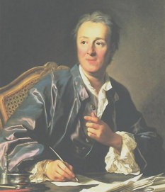

“Creatividad es permitirte cometer errores. Arte es saber cuáles conservar.”
—Scott Adams
Me parece que fue la lectura del premio Nobel de física Murray Gell-Mann que me introdujo al neutrino. Desde entonces he sentido cierta fascinación por la partícula subatómica para la que se han construido domos gigantescos debajo de la tierra. No se dan muchos los descubrimientos en estas áreas, tienes la teoría y puedes esperar décadas para que se confirme, la evolución tecnológica es cada vez más necesaria para medir parámetros a los que no estamos acostumbrados en nuestro diario vivir; los habitantes del mundo cuántico son algo excéntricos… o por lo menos, así nos lo parecen todavía, y luego está el asunto de los sigmas, las confirmaciones, los errores…
Leía en la revista Symmetry sobre la quinta observación en el acelerador OPERA en Italia del neutrino tau. Esta historia comenzó en el año 2010 cuando el equipo en Italia anunció haber observado al neutrino Tau, luego en 2012, 2013 y 2014 anunciaron haberlo visto una segunda, tercera y cuarta vez. Ahora lo han observado por quinta vez: “la probabilidad de encontrar por casualidad cinco neutrinos tau en sus datos es menos de una en un millón”, reporta Symmetry.
“La quinta detección de un neutrino tau es extremadamente importante”, expresó en un comunicado de prensa Giovanni De Lellis del Instituto Nacional Italiano de Física Nuclear en Nápoles, hogar del OPERA. “Podemos reportar, definitivamente, el descubrimiento de la aparición de neutrinos tau en un haz de neutrinos de muones”.

Podríamos pensar en el neutrino como “la cantidad más pequeña de realidad jamás imaginada por un ser humano”, como lo definiera Frederick Reines, físico americano ganador del premio Nobel de Física junto a Clyde Cowan, por detectar antineutrinos. Además, esta subpartícula cambia de “sabor”, algunos lo explican que cambia de masa ya que el neutrino presenta tres masas distintas: desde el neutrino electrón, al neutrino muón, hasta el neutrino tau. El extremadamente liviano y zurdo bicho atraviesa planetas completos sin interactuar con su materia, cambiando de electrón a muón a tau durante todo el evento. Aún incompleta y fascinante historia.
¿Y a qué viene todo esto?
Pues aparte de lo que escribí anteriormente, que ya de por sí es súper interesante, (vayan y busquen más información si no han leído al respecto todavía) y de muchos otros eventos que incluyen a estas subpartículas, tanto en la física de una supernova como en los múltiples usos que su débil interacción provee, el neutrino también es parte de la teoría de la Gran Explosión, de hecho, es parte de la explosión. De acuerdo con la teoría también conocida como Big Bang, los neutrinos nacieron en menos de un segundo después de la Gran Explosión y continúan existiendo porque interactúan muy poco con la materia.
“Cada centímetro cúbico en el espacio contiene unas 300 de estas reliquias neutras”, escribe Hitoshi Murayama de la Universidad de Berkeley.
De hecho, el observatorio Kamiokande en Japón observó los neutrinos creados por la supernova 1987A, varias horas antes de que los telescopios capturaran el evento.
“Puede que la masa del neutrino explique nuestra existencia”, agrega Murayama.
La ciencia del neutrino es inagotable porque conocemos lo suficiente para encantarnos con los resultados de su estudio, pero el conocimiento acumulado hasta el momento no es suficientemente satisfactorio… aún. Esa es una de las rutas de estudio científico sobre nuestros orígenes. Más allá de la existencia de vida en cualquiera de sus formas en los billones y billones de planetas que parecen existir en el Universo, los astrofísicos y cosmólogos estudian cómo se formó la materia en el Universo, cómo le ganó la lucha por la existencia a la antimateria y cómo empezó todo esto en el Cosmos. No es poca cosa, ahora bien, ¿no es una cuestión fascinante?
Sin embargo, continuamos enseñándole a nuestros hijos que una serpiente, una pareja y un ser sobrenatural en el cielo son los protagonistas de la creación. Lo del neutrino tau ya lo explicará dios cuando lleguemos al cielo.
Existe un hueco gigantesco y preocupante en el pensamiento humano moderno. Cuando lees sobre los neutrinos puedes tomar en cuenta que se gastan miles de millones de dólares para conocerlo bien mientras miles de millones en el mundo continúan sin saber lo que es un neutrino; muchos mueren de hambre, por la violencia, por la pobreza y por la indiferencia de los demás (me incluyo), demasiado joven y pobre para pensar en neutrinos. La ignorancia es felicidad, dicen por ahí, y la Madre Teresa afirmaba que “el sufrimiento de los pobres es de gran ayuda para el mundo”, también le parecía que el sufrimiento de las parejas al pagar juntos por sus errores ayudaba al mundo, ya que votó de forma negativa en 1996 para que Irlanda no cambiara su constitución y permitiera el divorcio. Las religiones se contradicen y mientras más sepas sobre ellas y sobre los hechos a nuestro alrededor que los humanos que hacen ciencia han descubierto, más claras quedarán. La decisión al final será tuya, tú eres el único que podrá ubicar lo sobrenatural en tu vida, junto al conocimiento que tengas sobre ella.
El peligro, sin embargo, es que ciertas creencias, al final, terminan imponiéndose por encima de las tuyas, de las de ellas, de las de todos.
Colonizadores han llevado sus religiones y culturas a lugares lejanos y los ganadores concluyen su labor sometiendo al perdedor a la adoración de sus dioses. Generaciones después, otros colonizadores harán lo mismo con estas víctimas, erradicando al dios que otro como él impuso sobre sus ancestros cientos de años antes. Por ello, la animosidad entre religiones tantas veces lleva a la muerte, toma tiempo adaptarte a una nueva creencia y muchos no lo pueden hacer. La religión es cuestión de vida o muerte en miles y miles de cerebros, es más que una relación privada con su mundo sobrenatural, todavía existen movimientos que utilizan el poder que tienen las creencias sobre los cerebros de cientos de miles para enseñarlos a odiar los dioses de los otros e intentar erradicarlos a través de acciones físicas para nada sobrenaturales. Y eso no es todo, si los demás no tienen dioses, pues el asunto se pone peor: “¡no tener dioses está prohibido!” “¡Ese asunto es del diablo!”
Es uno de los peligros que nos acechan todavía, hasta en los lugares más progresistas existe cierto juicio nublado respecto a los ateos. No importa si eres budista (aunque en el corazón del Buda no parezca existir un dios), Wicca o familiar de Xenu, pues por lo menos ellos creen en algo, ese es el pensamiento que lidera la banda en algunos casos, en otros, sin embargo, también te matan por tener otro dios. Ahora bien, declararse ateo es pisar más allá de la línea amarilla, donde todos los deseos sobrenaturales del creyente dejan de relacionarse con los tuyos, esos que omiten el sobre de lo natural.
Creer o no creer, esa es la otra historia
Y todo el mundo tiene una. Por nuestros lados hispanoamericanos, la familia suele tener alguna raíz religiosa, o grupos dentro de la familia pertenecen a distintas denominaciones de la misma religión o a otras distintas, aunque esto último es menos común. Y aunque mucha juventud nacida en los noventas se ha criado atea o con familias donde la religión no estaba presente aún creyeran en algún dios; todavía la gran mayoría sigue a dioses y profetas específicos.
Veamos los ejemplos estadísticos que nos regala este estudio publicado en el Informe de Librepensamiento 2013 y elaborado por la Unión Internacional Humanista y Ética (IHEU), organismo mundial de ateos, agnósticos y otros escépticos religiosos, con datos que abarcan más allá de los países musulmanes, donde los religiosos son mucho más radicales con sus ciudadanos respecto a sus creencias.

“Este informe muestra que la gran mayoría de los países no respetan los derechos de los ateos y librepensadores aunque han firmado acuerdos con la ONU para que todos los ciudadanos sean tratados por igual”, dijo la presidenta de la IHEU, Sonja Eggerickx, para http://www.reuters.com/.
Reuters explica que el “estudio abarcó los 192 Estados miembros del organismo mundial y participaron abogados y expertos en derechos humanos… “Una primera encuesta de 60 países mostró sólo siete donde la muerte, a menudo por decapitación pública, es el castigo, ya sea por blasfemia o apostasía o por la renuncia a creencias o cambiar a otra religión, a pesar de que son acciones donde los ciudadanos supuestamente deberían estar también protegidos por acuerdos con la ONU”.
Sin embargo, este año seis países más, todos de creencias religiosas musulmanas, completaron la execrable lista donde ser ateo te puede costar la vida:
Afganistán
Irán
Malasia
Maldivas
Mauritania
Nigeria
Pakistán
Qatar
Arabia Saudita
Somalia
Sudán
Emiratos Árabes Unidos
Yemen
De acuerdo con el informe, “hay leyes que niegan a los ateos el derecho a existir, revocan su ciudadanía, limitan su derecho a contraer matrimonio, obstaculizan su acceso a la educación pública, evitan que trabaje para el estado…”.
Dicen, más aún, que hasta la “crítica de la fe religiosa o del estudio incluso académico de los orígenes de las religiones, es tratada con frecuencia como un delito y se puede equiparar al delito capital de la blasfemia”, expresó Eggerickx.
Pero el asunto no muere completamente en esos países y aunque los ateos no enfrentan peligro de decapitación en países de la Unión Europea, Latinoamérica y El Caribe, sí existen distintos tipos de discriminación para los no creyentes. De hecho, de acuerdo con IHEU, existe discriminación sistemática y grave contra los ateos en todas las 27 naciones de la Unión Europea, especificando que la “situación era grave en Austria, Dinamarca, Alemania, Grecia, Hungría, Malta y Polonia, donde las leyes de blasfemia permiten penas de cárcel de hasta tres años con cargos de ofender a una religión o a creyentes”.
“En estos y todos los demás países de la UE, con la excepción de los Países Bajos y Bélgica, a los que el informe clasificó como ‘libres e iguales’, existía discriminación sistemática en toda la sociedad a favor de las religiones y de los creyentes religiosos”.
De acuerdo con Wikipedia, “en muchos países, o bien no hay leyes contra la blasfemia o las leyes establecidas desde hace ya mucho tiempo no son aplicadas. En los Estados Unidos, por ejemplo, un proceso por blasfemia violaría la Constitución según el caso del Tribunal Supremo en 1952 de Joseph Burstyn, Inc. v. Wilson. El Reino Unido abolió sus leyes contra la blasfemia en Inglaterra y Gales en 2008 con la aprobación de la Ley de justicia penal e inmigración. La última persona ahorcada por blasfemia en Gran Bretaña fue Thomas Aikenhead, de 20 años, en Escocia en 1697. Y fue procesado por negar la veracidad del Antiguo Testamento y la legitimidad de los milagros de Cristo”. Del mismo modo, en las democracias prácticamente todo el primer mundo occidental y Asia Oriental, como Japón y Taiwán, cuando hay en existencia leyes contra la blasfemia, son en gran medida de facto letra muerta (es decir, obsoletas). En Europa, la Asamblea Parlamentaria del Consejo de Europa ha recomendado que los países promulguen leyes que protejan la libertad de expresión”.
Muchas zonas geográficas han abolido o disminuido las formas en que castigaban por no creer, a pesar de ello, persiste el ‘tufillo’ alrededor de los ateos, tanto así, que muchos preferimos tantear el territorio antes de hablar honestamente.
“En los Estados Unidos la situación dio resultados ‘mayormente satisfactorios’ en cuanto al respeto de los derechos legales de los ateos, a pesar de que existen leyes y prácticas que equiparan ser religioso con ser estadounidense”, escribieron los autores en Reuters. “En América Latina y el Caribe, los ateos enfrentan discriminación sistemática en la mayoría de los países, excepto en Brasil, donde la situación era ‘generalmente satisfactoria’, y en Jamaica y Uruguay quienes también fueron clasificados como ‘libres e iguales’. En toda África, sin embargo, los ateos no sólo enfrentan violaciones graves y sistemáticas de sus derechos a la libertad de conciencia, sino también violaciones graves en países como Egipto, Libia, Marruecos y en Zimbabwe, en la primordialmente cristiana Eritrea”.
Es decir, en la mayor parte del mundo los ateos no disfrutamos de los mismos derechos y leyes. De hecho, muchos ateos no sólo arriesgan sus vidas al exponer sus ideas sobre el mundo sobrenatural, sino que pueden arriesgar su reputación y poner en peligro sus derechos frente a futuros empleos y ayudas sociales. Ciertamente, los humanistas y luchadores de los derechos humanos han logrado cambiar y desarrollar mejores ideas en distintos vecindarios y la tecnología ha aportado sus granitos de arena. A pesar de ello, la aceptación del ateo en las redes sociales y en otros lugares cibernéticos no la vuelve real en el mundo no cibernético, por lo tanto, una gran cantidad de ideas ateas son mantenidas en la privacidad del hogar y/o de los más íntimos amigos.
Las personas que deciden que si no crees en sus dioses necesitas ser castigado son peligrosas. Este tipo de absolutismo violento les impide ver y relacionar cómo el cuchillo que clavan contra nuestra libertad los hiere de forma letal en el mismo instante en que dan la puñalada. Cuando me retiras derechos por no creer en tu dios simplemente allanas el camino para que otros hagan un día lo mismo contigo. Quizás seas obligado por otros creyentes o tal vez por un poder ateo con deseos de venganza, no tengo idea, pero es eso todo lo que terminarás creando, permitiendo y manteniendo. Preservando y promocionando una idea que no lleva a la especie a ningún lado ni bueno ni nuevo.
La aceptación del ateo sigue siendo incompleta. Existe cierto desdén y una pizca de desconfianza entre las mentes más sofisticadas, algunas veces porque entre las características con las que nos han descalificado se encuentra la arrogancia, especialmente entre los ateos que hablan sin temor, de alguna forma, nuestro apego a los hechos, a las pruebas y al razonamiento pone a muchos de mal humor.
La aceptación es más fácil cuando hay amor de por medio, aún así, las creencias religiosas pueden ser peligrosas si el comportamiento de uno de los cachorros en la camada espiritual resulta no ser como la religión de turno espera que sea. Las identidades sexuales, las creencias distintas o las no creencias, la igualdad de condiciones entre los géneros, el racismo y las nacionalidades son algunos de los grandes problemas discriminatorios en casi todas las religiones del mundo.
Pero, más que nada:
¿Lo sientes tú, ateo?
¿Lo sientes tú, creyente?
¿Prefieres a un amigo de otra religión por encima de un ateo o eso no tiene importancia en tu vida?
¿Piensas que los ateos deberían permanecer en silencio?
¿Te gustaría que un ateo fuera presidente de tu país?
En mi opinión, la mejor respuesta a esta última pregunta sería: “eso depende”. Y es que para ser líder de una nación no deberían importar tus creencias, sino tu actitud respecto a las creencias o no creencias de los demás. El verdadero líder humanista no quiere que juzguemos a otro por su religión o su falta de ella. No obstante, ¿es eso lo que hacemos?
Para mí es difícil tomar con seriedad las palabras de un miembro de la Cienciología, por ejemplo; no obstante, esa persona puede ganarse mi respeto de otras formas. Pero si en mi agenda continúa anotada la discriminación religiosa por todas sus páginas, no permitiré que lo haga y en mi actitud negativa le negaré los mismos derechos por los que lucho para mí.
El humanista escéptico, con ganas de ser justo, pasará por encima de sus propios prejuicios para permitir que la persona completa se desarrolle y pueda percibir así un perfil más cabal y pormenorizado. Ya, luego de ahí, puedo decidir mejor si deseo continuar escuchando a esa persona, o si puedo considerar valiosas sus opiniones respecto a mis pensamientos y mi persona.
Vivimos en un mundo repleto de evidencias que son diariamente ignoradas. Como especie, nos desarrollamos sin ellas, las fuimos adquiriendo con el tiempo y junto al aumento de capacidad de razonamiento, sin embargo, hoy la mayoría decide ignorarlas porque no corroboran lo que dice su religión. Casi todos pensaron que encontrarían pruebas que reafirmaran sus creencias, al no ser así se levantó una guerra en contra de todo lo que pusiera en duda el mundo sobrenatural.
Menos mal que la razón y la empatía humana han encontrado formas de enseñar al Homo sapiens que los derechos nos pertenecen a todos, y es en ese camino donde quedan muchos asuntos por resolver… mientras tanto, sigue siendo fascinante leer sobre el neutrino y elucubrar que a lo mejor le debamos la masa en el universo… sería efectivamente fascinante si más humanos vislumbraran las potenciales maravillas que existen dentro de esa información.
© 2008-2025 Glenys Álvarez y Sin Dioses.
Volver al índice de artículos
Comentarios
Comments powered by Disqus